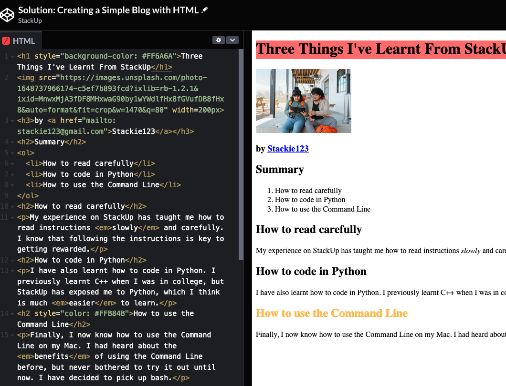

Questions
What should | include in my screenshot?
Unless otherwise specified, your screenshot should always include
- Your full code
- The full output of your code
| Good Example | Bad Example 1 | Bad Example 2 |
|---|---|---|

|

|

|